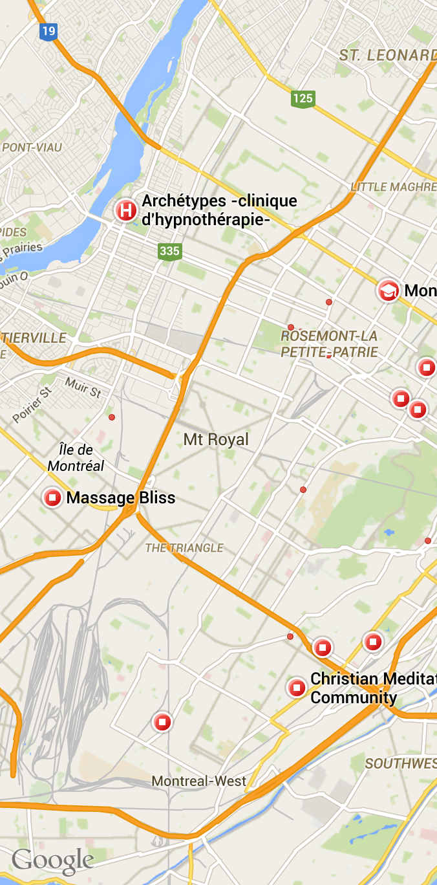

<script src="https://maps.googleapis.com/maps/api/js"></script>
<script>
    angular.element(document.body).on('pageinit', '#map-page', function() {
        console.log("map page being initialized");
        angular.element.getScript('https://www.google.com/jsapi', function()
        {
            google.load('maps', '3', { other_params: 'sensor=false', callback: function()
                {
                    var mapOptions = {
                        center: { lat: -34.397, lng: 150.644},
                        zoom: 8
                    };
                    var map = new google.maps.Map(document.getElementById('map-canvas'), mapOptions);
                    console.log("map created.");
            }});
        });
    });
</script>
<ons-page id="map-page">
</img>
<div id="map-canvas"><div>
        </ons-page>
